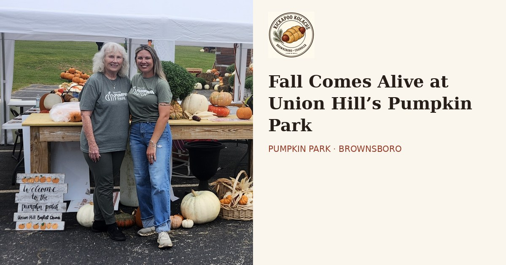
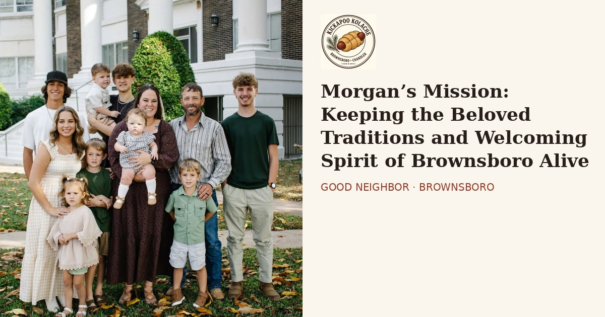
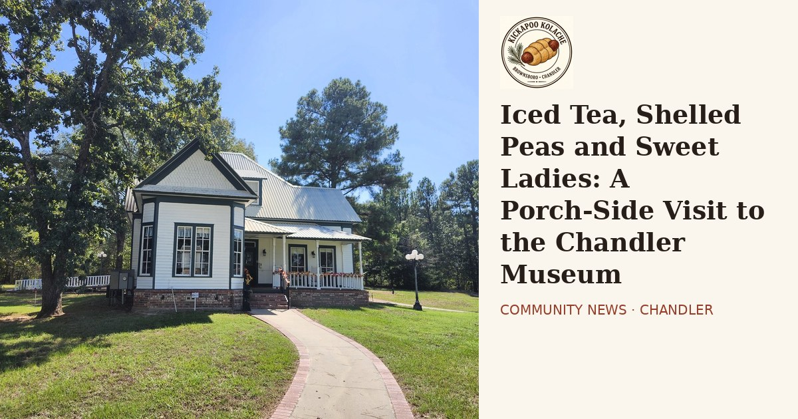
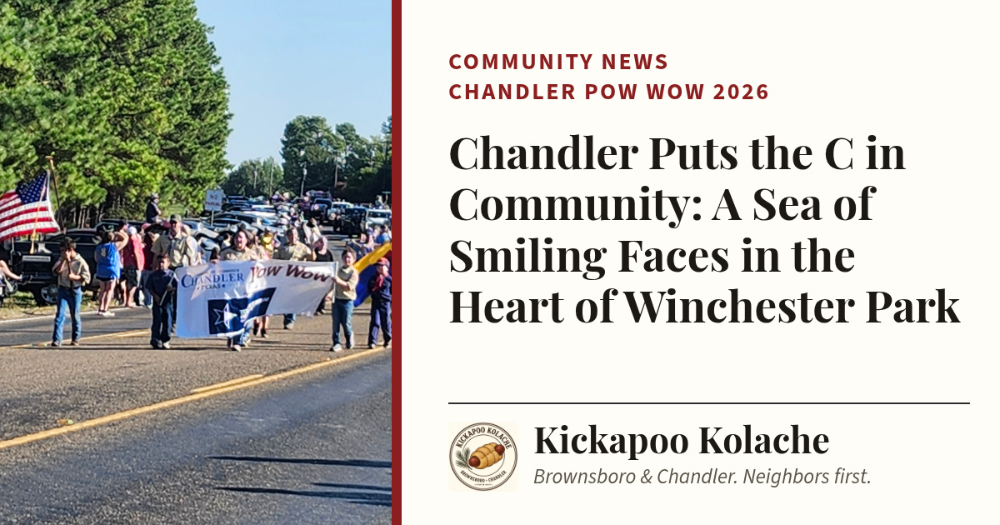
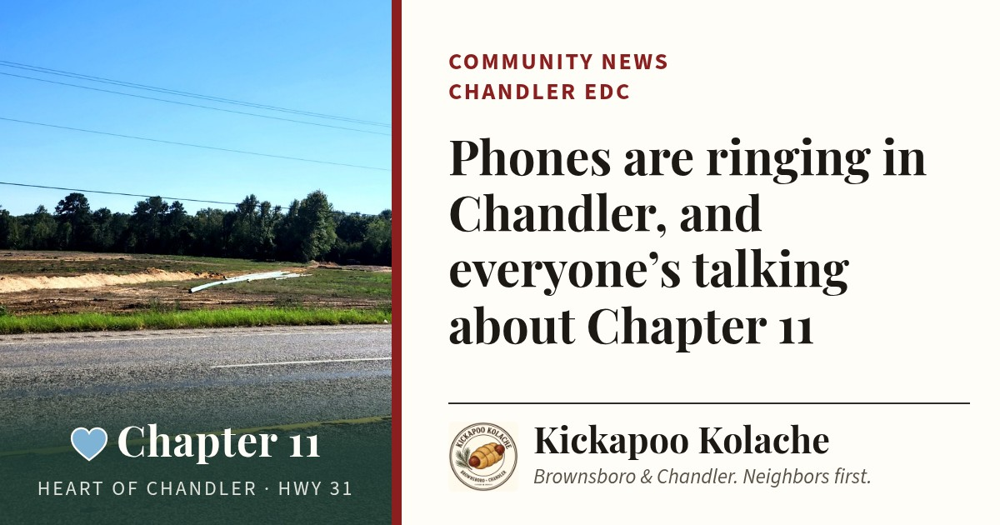
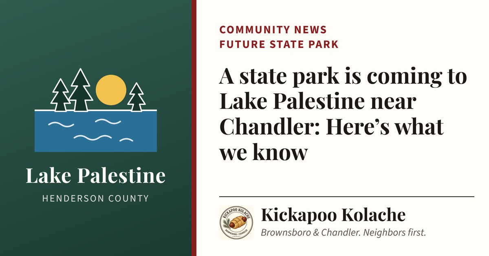
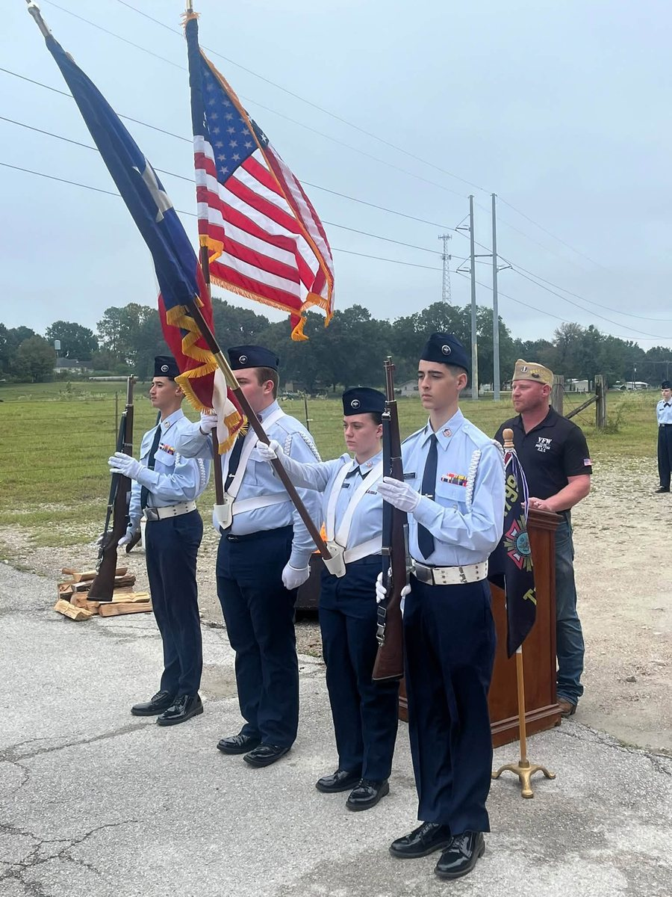
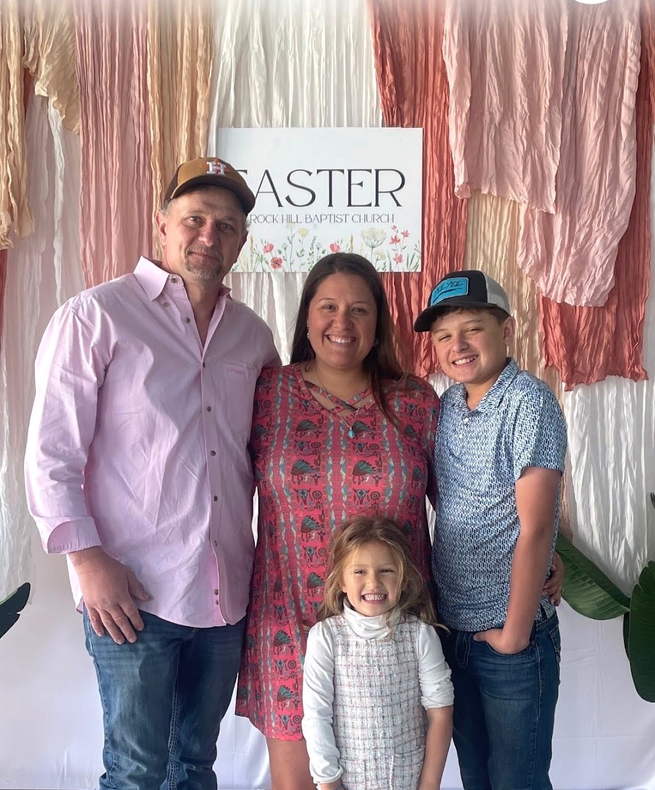

Fall Comes Alive at Union Hill’s Pumpkin Park
Hay rides, corn pits and plenty of pumpkins draw families to Brownsboro
Brownsboro & Chandler. Neighbors first.
Digital Edition · Est. 2026

Hay rides, corn pits and plenty of pumpkins draw families to Brownsboro

Quilter, mom of nine and Brownsboro Chamber chairwoman, Morgan is busy reviving the hometown traditions she grew up loving.

Most towns Chandler’s size don’t have a museum at all. Chandler has one with two buildings, and the simple reason is a group of sweet ladies, plus other volunteers, laboring in love.

Vendors, students, families and a whole lot of volunteers filled Winchester Park for the Chandler Chamber of Commerce’s biggest day of the year.

Rick Ford and the Chandler EDC helped a development of around 50 acres with a heart-shaped lake clear two years of studies. Plus: the Pow Wow is this Saturday.

The Pollard family’s land on Lake Palestine, about 650 acres of pines, pecans and lakefront, is on its way to becoming a Texas state park. Where it is, what it could offer and when it might open.

Brownsboro’s Carlee Burgess joined fellow Civil Air Patrol cadets and VFW Post 1799 to lay 28 worn flags to rest.

Kayla Goodson would rather point you to her neighbors than talk about herself, so this story is about the people who quietly give, serve and show up, and the community spirit she hopes to keep alive.
About two months into the youth minister role at West Lake Baptist Church, Bro. Palmer talks about teaching life skills to Empower Christian Academy students, midweek school visits, and preparing students before they leave The Dock student ministry.
A year and a half after coming home to East Texas, Rock Hill Baptist Church’s lead pastor talks about two campuses, a church outgrowing its space, and why faithfulness and people come first.
Know a neighbor we should talk to? Send an interview tip